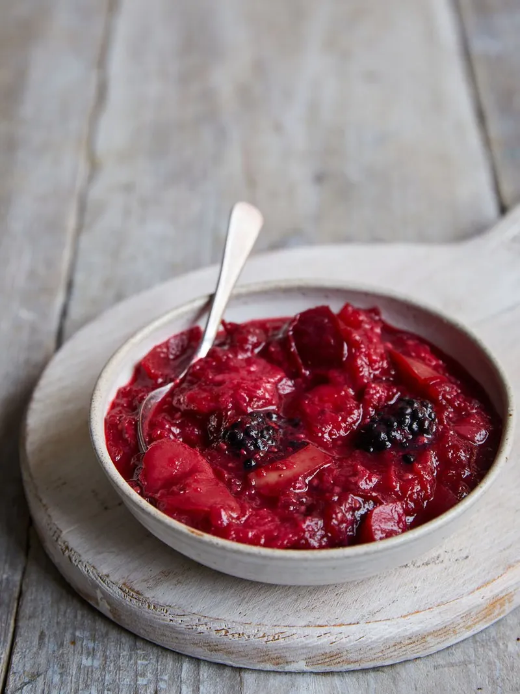

Warm Berry Compote

Compote is French for “mixture.” It is basically a sweet, chunky fruit sauce made with whole or chopped fresh or frozen fruit and sugar. The fruit and sugar are typically cooked on the stovetop for a brief time until the fruit has softened and collapsed into a delicious fruit sauce
Ingredients
- 6 cups frozen mixed berries
- 1 ½ teaspoons finely grated orange zest
- 2 tablespoons cornstarch
Directions
Step 1: Stir frozen berries, sugar, orange juice, and orange zest together in a slow cooker. Cover and cook on High until bubbling, about 1 1/2 hours.
Step 2: Stir cornstarch and water together in a cup until fully dissolved. Stir into berry mixture. Cover again and cook until thickened, 5 to 10 minutes. Serve warm or at room temperature.